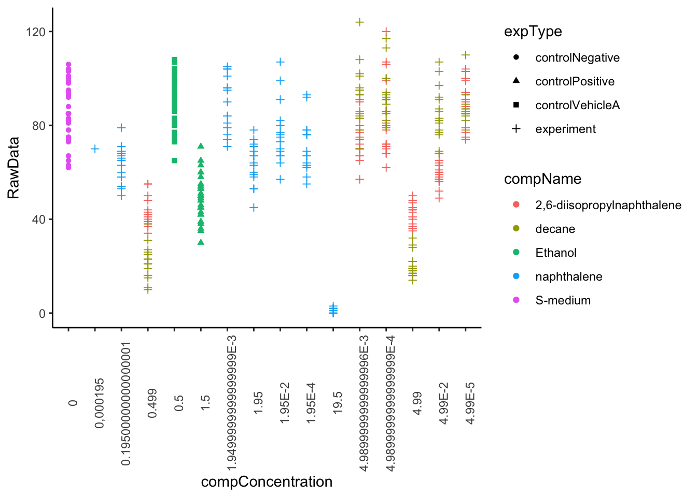
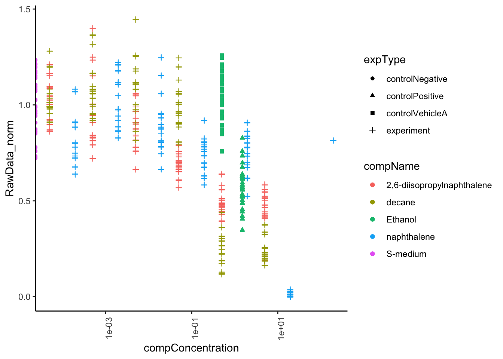

7 C.elegans plate experiment
Vraag A
Ongewone observaties:
- De data in kolom expDate is niet zichtbaar, in plaats daarvan kan je alleen #### zien.
- De kolommen plateRow en plateColumn bevatten geen data.
- Kolom bubble bevat alleen maar N/A.
- Het kolom van de RawData loopt nog heel lang door, ondanks dat er geen data meer is op dat punt.
Vraag B
Vraag C
Data types van de kolommen van het bestand:
RawData = dbl
compName = character
compConcentration = character
Wat zou ik verwachten op basis van de experimentele omschrijving?
RawData: integer (een geheel getal)
compName: character
compConcentration = double (een concentratie met decimalen)
De data types van RawData en van compConcentration zijn dan niet correct toegewezen.
Vraag D
library(tidyverse)
ggplot(data = data_ce.liq.flow.062, aes(x = compConcentration, y = RawData)) +
geom_point(aes(colour = compName, shape = expType)) +
theme_classic() +
theme(axis.text.x = element_text(angle = 90))
Vraag E
De x-as is niet op volgorde van een kleine naar een grootte concentratie. Getallen ver in de min staan tussen getallen boven de 0 in.
Dit komt doordat het data type van character klasse is, het wordt dan op volgorde van overeenkomende characters geordend, 0 dan 1 dan 2 enz. in plaats van op basis van de concentratie. E-3 wordt dan ook gezien als character en niet als een wetenschappelijke notatie.
Vraag F
library(dplyr)
library(ggplot2)
#compConcentration omzetten naar double data klasse
data_ce.liq.flow.062_d <- data_ce.liq.flow.062 %>% mutate(compConcentration = sub(",","", compConcentration), compConcentration=as.double(compConcentration))
#x-axis omzetten naar log10 scale en gebruik jitter zodat de punten niet overlappen
ggplot(data = data_ce.liq.flow.062_d, aes(x = compConcentration, y = RawData, colour = compName, shape = expType)) +
geom_point(aes(colour = compName, shape = expType)) +
geom_jitter() +
theme_classic() +
theme(axis.text.x = element_text(angle = 90)) +
scale_x_log10() 
Vraag G & H
The positive control for this experiments is ethanol.
The negative control for this experiment is S-medium.
Vraag I
Voor alle 3 de te testen composities (2,6-diisopropylnaphthalene, decane en naphthalen) zijn er voor elke concentratie 3 vials en uit elke vial worden er 5 metingen gedaan. De positieve, negatieve en vehicle control hebben vaste concentraties.
Stappenplan analyse:
MET COR.TEST
1. Van alle 3 de composities een apart object maken met de pipeline (voorbeeld 2,6-diisopropylnaphthalene): diisopropylnaphthalene <- data_ce.liq.flow.062 %>% filter(compName == “2,6-diisopropylnaphthalene”)
2. Een correlatie analyse uitvoeren voor elk van de 3 compensities met cor.test().
3. Plot de data, x is de compConcentration en y is de RawData.
MET ANOVA 1. Van alle 3 de composities een apart object maken met de pipeline (voorbeeld 2,6-diisopropylnaphthalene): diisopropylnaphthalene <- data_ce.liq.flow.062 %>% filter(compName == “2,6-diisopropylnaphthalene”) 2. Voor alle 3 de te testen composities per concentratie het gemiddelde en de standaardeviatie berekenen met de volgende pipeline: diisopropylnaphthalene_sum <- diisopropylnaphthalene %>% group_by(compConcentration) %>% summarize(mean_progeny=mean(RawData), stdev=sd(RawData)) 3. Data plotten met de pipeline: diisopropylnaphthalene_sum %>% ggplot(aes(x = compConcentration, y = mean_progeny, fill = compConcentration)) + geom_col() + geom_errorbar(aes(ymin = mean_progeny-stdev, ymax = mean_progeny+stdev), width = .2) + theme(axis.text.x = element_text(angle = 90)) 4. Checken voor normaliteit met de shapiro.wilk() optie, dit moet per concentratie gecheckt worden. 5. Uitvoeren van een ANOVA met de functie aov() en de resultaten bekijken met summary.aov().
Vraag J
# Calculate the mean concentration for 'controlNegative'
controlNegative_mean <- mean(data_ce.liq.flow.062_d$RawData[data_ce.liq.flow.062_d$expType == "controlNegative"], na.rm = TRUE)
# Normalize the 'compConcentration' for 'controlNegative' to have a mean of 1
data_normalized <- data_ce.liq.flow.062_d %>%
mutate(
RawData_norm = RawData / controlNegative_mean # Normalize the concentration
)
#Rerun graph with normalized data
ggplot(data = data_normalized, aes(x = compConcentration, y = RawData_norm, colour = compName, shape = expType)) +
geom_point(aes(colour = compName, shape = expType)) +
geom_jitter() +
theme_classic() +
theme(axis.text.x = element_text(angle = 90)) +
scale_x_log10() 
Vraag K
Om de negatieve controle als grondlijn/ referentie te nemen waarmee de rest van de ruwe data vergeleken kan worden. Door de andere condities als fractie van de negatieve controle te visualiseren worden de relatieve verschillen tussen de condities benadrukt, in plaats van de absolute metingen.